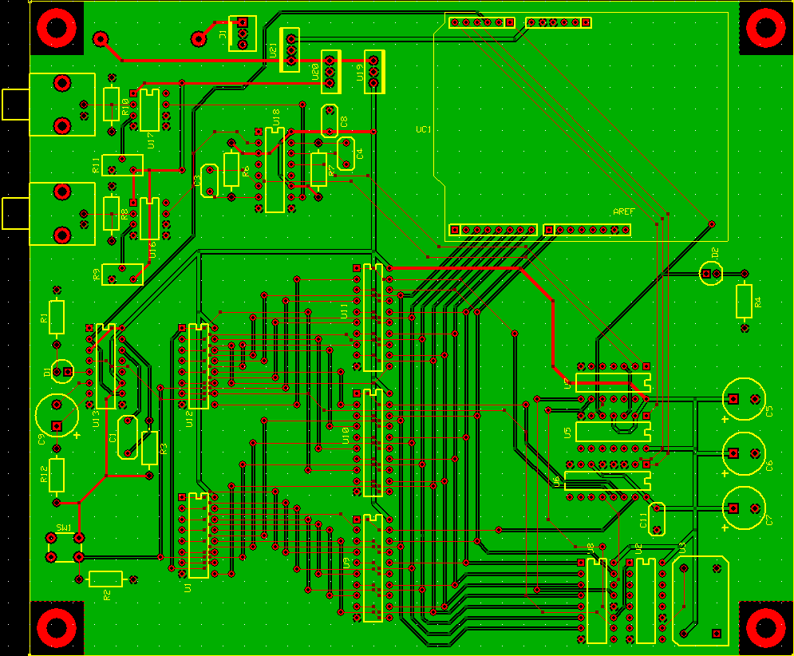
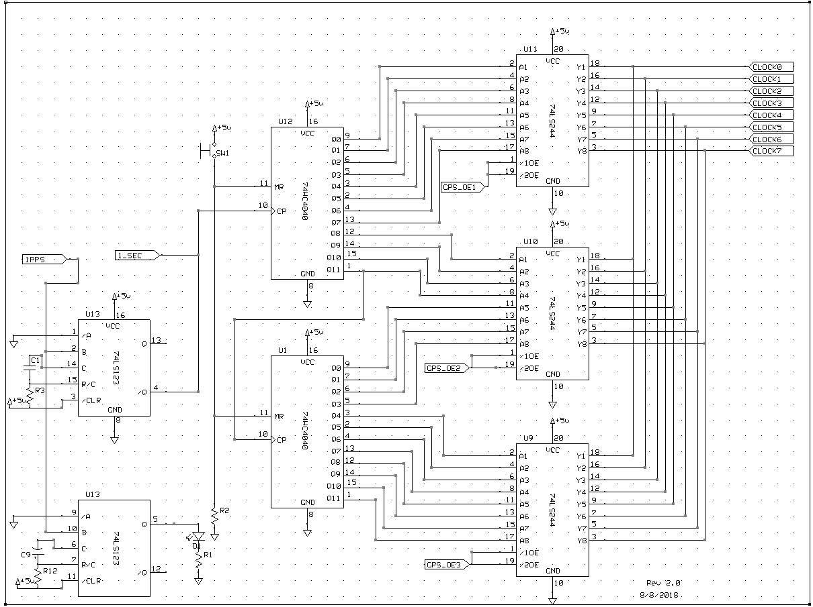
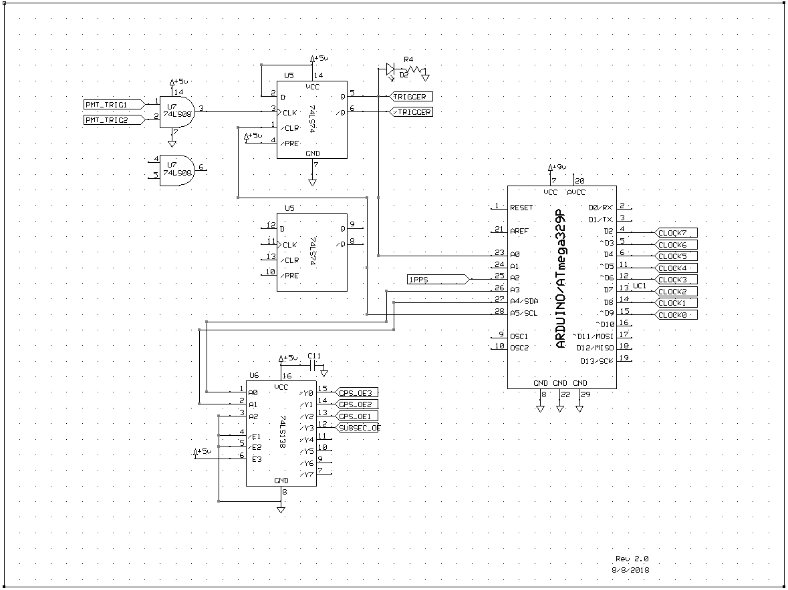
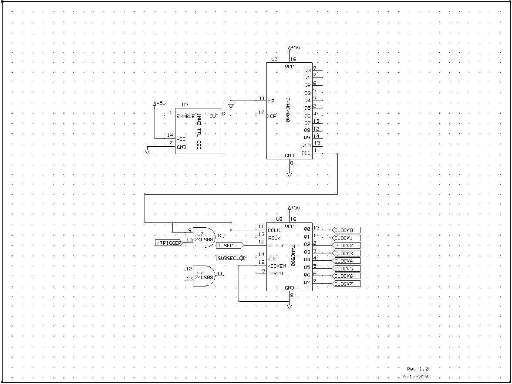
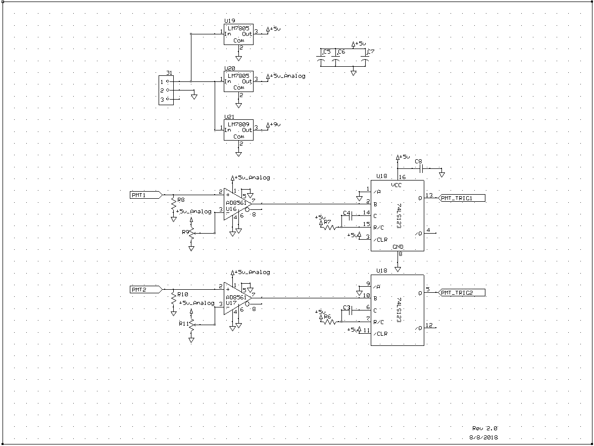

Images collected while performing research at the College
of the Holy Cross.
(Click on an image for an expanded view)
Cosmic ray telescope. Scintillator paddles
shaped as isoceles trapezoids (outlined in red) emit
light energy as energetic particles pass through.

Telescope PCB image. Created using PCBExpress,
this PCB image illustrates every connection between electric
components on the circuit board. Red connections are on
top of the board, while the green connections go
underneath the board. You can download a copy of the PCB
file here.

Circuit board schematic page 1. Also created
using PCBExpress, this schematic conceptualizes the
connections between components with no regard to physical
location. Page 1 focuses upon connections between the
binary clock system. You can download a copy of all
four schematic pages here.

Circuit board schematic page 2. Major components
include the Arduino Leonardo, coincidence logic gates,
and clocked data flip-flops.

Circuit board schematic page 3. Crystal oscillator,
more logic gates, and a binary counter.

Circuit board schematic page 4. Voltage regulators,
analog to digital converters, and some capacitors.

{kind=link}
{kind=link}
{kind=link}
{kind=link}
{kind=link}